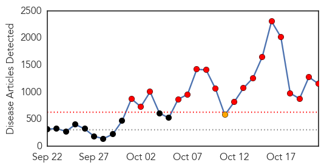
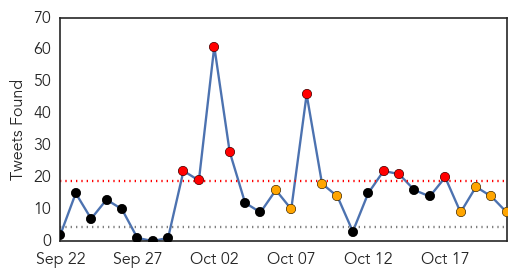

Ebola
30-Day Web Trend
18 alerts, 1 warnings

30-Day Twitter Trend
15 alerts, 5 warnings

Article Locations
Article Confidences
Top Articles:
- 1.000
- What is ebola: special report
- 1.000
- Mexico on alert for Ebola
- 1.000
- Latest Ebola News: US appreciates Cuba's contribution in Ebola fight
- 1.000
- Ebola in US: 120 people being monitored for Ebola signs in Dallas, Texas
- 1.000
- Ebola in Sierra Leone: Norwegian doctor with Ebola cured and discharged
- 1.000
- Ebola crisis turns a corner as U.S. issues new treatment protocols
- 1.000
- Cuba sends more aid to Ebola zone
- 1.000
- FAQ: Everything you need to know about Ebola
- 1.000
- Chronology: Worst Ebola outbreak on record tests global response
- 1.000
- CHRONOLOGY-Worst Ebola outbreak on record tests global response
- 1.000
- CHRONOLOGY-Worst Ebola outbreak on record tests global response
- 1.000
- Somalia: Ebola Disease Could be There
- 1.000
- Texas authorities clear scores on Ebola watch list
- 1.000
- Cameraman Treated for Ebola Now 'Free' of the Virus
- 1.000
- Even germaphobes don’t need to fear Ebola
- 1.000
- Cameraman Ebola-Free, Can Go Home - Story
- 1.000
- The Ebola crisis: 17 important moments in 2014
- 1.000
- Texas authorities clear scores on Ebola watch list
- 1.000
- 9 questions you were too afraid to ask about Ebola
- 1.000
- Mayor Luttrell, Health Officials Talk Ebola Response Methods
- 1.000
- Canadian Ebola vaccine sent to WHO for testing
- 1.000
- Radnor police will be prepared for unlikely Ebola outbreak
- 1.000
- The latest on the Ebola crisis
- 1.000
- Ebola outbreak: Nowhere is safe until virus is contained in Africa, claims the top doctor who beat it in Nigera
- 1.000
- Why do some people escape Ebola, and not others?
- 1.000
- Latest Updates WHO: Ebola Toll Rises to 4,877 Out of 9,936
- 1.000
- Regional hospitals run Ebola drills
- 1.000
- US Sets New Protocols for Ebola Health Workers
- 1.000
- Timeline: Worst Ebola outbreak on record
- 1.000
- With no new cases in 42 days, WHO declares Nigeria Ebola free
- 1.000
- World fears mount that Ebola battle being lost
- 1.000
- Texas authorities clear scores on Ebola watch list
- 1.000
- Texas authorities clear scores on Ebola watch list
- 1.000
- Travelers from Ebola-hit region must use 5 U.S. airports
- 1.000
- Travelers from Ebola-hit region must use 5 U.S. airports
- 1.000
- The latest on the Ebola crisis
- 1.000
- Ebola outbreak: What you need to know
- 1.000
- Ebola vs ChikV • Caribbean Life
- 1.000
- Texas authorities clear scores on Ebola watch list
- 1.000
- ABC-7.com WZVN News for Fort Myers, Cape Coral & Naples, Florida
- 1.000
- Travelers from African countries hit by Ebola restricted to five U.S. airports
- 1.000
- Freelance Cameraman Free of Ebola, Can Leave Nebraska Hospital
- 1.000
- Healthy Living: Some Straight Talk about Ebola
- 1.000
- Rwanda urges daily screenings for visitors from ‘Ebola-hit’ USA and Spain — RT News
- 1.000
- U.S. freelancer now free of Ebola; Texas nurse Nina Pham upgraded to good condition
- 1.000
- Anti-Ebola fight achieves temporary victory worldwide, more efforts needed - Xinhua
- 1.000
- Latest Developments In The Ebola Story
- 1.000
- Xinhua Insight: China beefs up preventions against Ebola
- 1.000
- Freelance cameraman free of Ebola, can leave Nebraska hospital
- 1.000
- Ebola cases rise sharply in western Sierra Leone
Showing top 50 articles...
Top Tweets:
- 0.977
- RT: VIDEO: UK Ebola vaccine tests continue: As UK efforts to find a vaccine for the Ebola virus continues, Tim Muf... http…
- 0.944
- Innovative response by Firestone health officials may have limited spread of Ebola in Liberia. http://t.co/DIBKkpp5Bd
- 0.925
- RT: Innovative response by Firestone health officials may have limited spread of Ebola in Liberia. http://t.co/DIBKkpp5Bd…
- 0.916
- RT: Liberia president says Ebola has brought country to 'a standstill' - Fox News http://t.co/LEyxntvgcB ebola EVD
- 0.897
- RT: Our next EbolaFact is about the symptoms of Ebola. A person infected with Ebola must have symptoms to be contagious. htt…
- 0.883
- T1. Ebola virus is spread through direct contact w/ blood or body fluids of a person who is sick w/Ebola abcDrBchat http://t.co/m0mwiSIcig
- 0.854
- Our next EbolaFact is about the symptoms of Ebola. A person infected with Ebola must have symptoms to be contagious. http://t.co/zZgP0yaFEC
- 0.832
- RT: Heb je vragen over ebola? Kijk op de website http://t.co/O3ld809v7Q of bel met het RIVM ebola-informatiepunt 0800-0480!
- 0.797
- WHO: Ebola serum could be available within weeks for patients in West Africa http://t.co/HU7N98arPG
- 0.759
- News articles suggesting experimental Ebola vaccines are in a race with each other are off-base. In a race with the virus. Virus is winning
- 0.719
- I visited Firestone hospital in Liberia in August & saw firsthand how they are stopping spread of Ebola: http://t.co/DIBKkpp5Bd
- 0.694
- Sierra Leone natives in Atlanta affected by Ebola stigma - CBS46 News http://t.co/oNtTJhYbdq
- 0.683
- T2. There have been 3 confirmed cases of Ebola in the US. Visit CDC website for the latest case counts: http://t.co/Y2y0pizBpp abcDrBchat
- 0.658
- Liberian official to Daily Observer: 400 registered Ebola cases in Liberia http://t.co/WBNjrYts55
- 0.652
- RT: T2. There have been 3 confirmed cases of Ebola in the US. Visit CDC website for the latest case counts: http://t.co/Y2y0pizBpp …
- 0.652
- Great news! 1,000 people have beaten Ebola in treatment centres across West Africa! Story: http://t.co/mVz2g6IHDt EbolaChallenge
- 0.644
- Worst Ebola outbreak on record tests global response http://t.co/FtrGm01IZH
- 0.622
- Ebola outbreak in the West: Why some survive, some don't http://t.co/8vYdU1hT6h TackleEbola
- 0.609
- Innovation in private sector offers lessons for interrupting Ebola spread. How Firestone stopped Ebola: http://t.co/DIBKkpp5Bd
- 0.566
- .@UN staffer dies of Ebola in Sierra Leone http://t.co/1NmhGvOkkx http://t.co/kscSBHQ09k
- 0.563
- RT: Innovation in private sector offers lessons for interrupting Ebola spread. How Firestone stopped Ebola: http://t.co/DIBK…
- 0.560
- A map of Ebola in West Africa, and what & others are doing about it: http://t.co/lapZVItqVK FightingEbola
- 0.545
- Ebola survivor: Ebola is like a disease from another planet http://t.co/XSabqLBTV0 TackleEbola http://t.co/7twHTKZ0Rd
- 0.522
- Ebola cases rise sharply in Western Sierra Leone http://t.co/BiFMX4IfLi TackleEbola http://t.co/P0JhNYUwHs
Pertussis
30-Day Web Trend
0 alerts, 0 warnings
30-Day Twitter Trend
0 alerts, 0 warnings

Article Locations

Article Confidences

Top Articles:
Top Tweets:
-
No tweets found for Oct 21, 2014